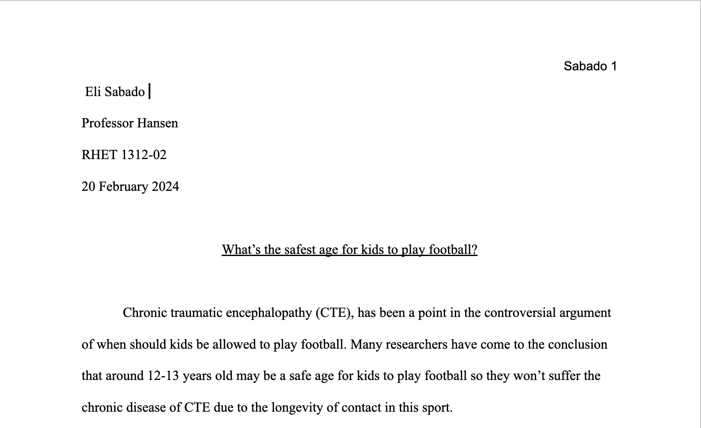
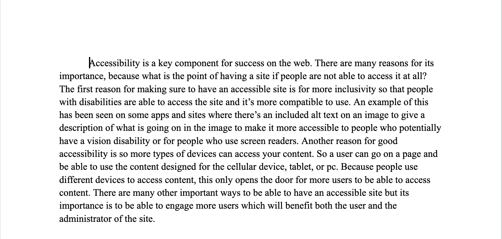

I have taken handful of classes that have grown my skills in writing. Throughout High School and now in to college, I have grown a portfolio of writing examples. Listed are some of my writing examples that I have written throughout college.
In my Composition II course, for our final writing assignment, we had to write a 5+ page essay about a topic of our choice that met the rubric requirements. I chose to write about brain health for kids, in regards to playing contact football.
Download PDF
In this writing Project for my IFSC 1300 course, I wrote about the importance of Web Assesibility on the internet, overlaying what it was and how one could go forwared implementing it.
Download PDF